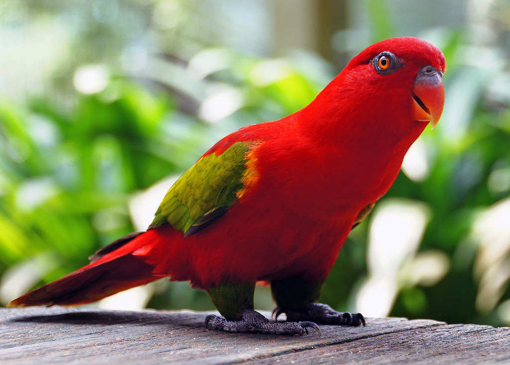

When it comes to parrot's lifespan can range from 8 to 50 years.There are differences in lifespans among pet parrots too. Notably, larger parrots tend to live longer than smaller parrots. The slower metabolism of bigger birds likely plays the biggest role,
Parrots have been considered desired companions for many years because of their brightly coloured appearance. Their cognitive abilities also make them highly interesting pets, and some parrots have amazed us with their skills to solve problems and even mimic human speech.
https://www.animalmedcarecenter.com/parrots#:~:text=Parrots%20are%20very%20smart%20and,a%20bird%20to%20your%20household.